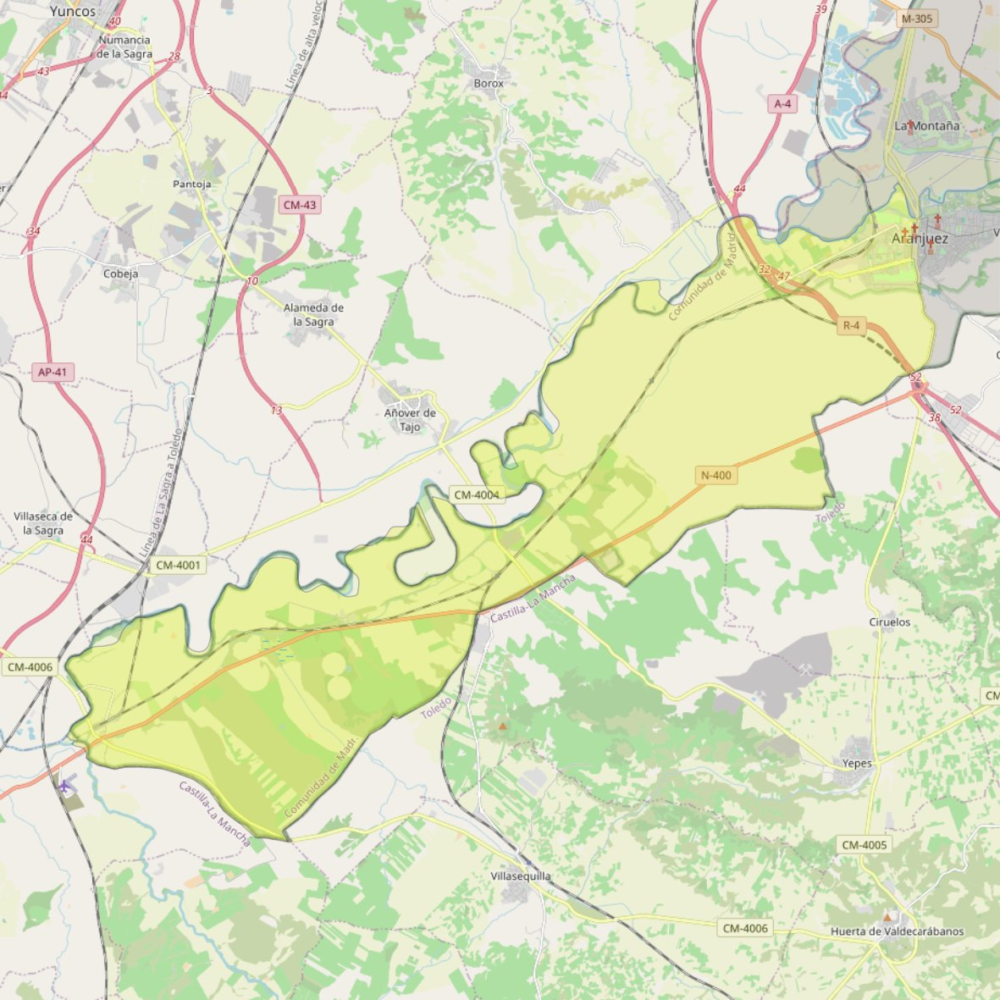

Espíritu Santo

- Arciprestazgo
- Aranjuez
- Población
- Aranjuez
- Dirección postal
- c/ Abastos, 1
- Código postal
- 28300
- Extensión
- 125,85 km² (12.585 ha)
- Teléfono
- 918 910 513
- Correo electrónico
- espiritusantoaranjuez@gmail.com
Arciprestazgos y parroquias de la Diócesis de Getafe
